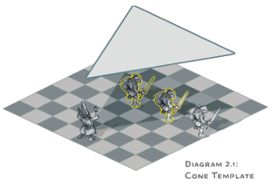
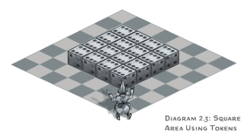
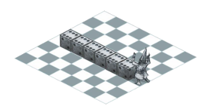
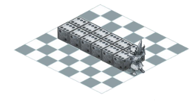

施法 Spellcasting
本节扩展了玩家手册和地下城主指南中所提及的施法规则，并提供了详细说明和新的选项。
察觉法术的施展 Perceiving a Caster
at
Work
许多法术展现出明显可见的效果：如火焰爆炸，冰墙，传送等等。其余的某类法术，如魅惑类人一样，没有任何可见的、可听见的、或其他可察觉其效果的迹象，并且很容易被不受其影响的人所忽视。正如《玩家手册》中所提到的，你通常不知道一个法术已经被施放了，除非这个法术产生了一个能够引起注意的效果。
但是施法的动作呢？是否有可能有人正察觉到一个法术正在被施放于他们的面前？要被觉察到，这次施法必须包含言语，姿势或材料。无论使用的是在法术描述中所指定的材料物件、材料包或者法器，该材料成分的具体形式对于感知结果而言并不重要。
如果对法术成分的需求已经被一种特殊的能力所取代，比如法师微妙的法术特性或者许多生物所具有的天生施法能力，那么施法是不可察觉的。如果一个不可察觉的施法产生了一个可感知的效果，通常不可能在没有其他证据的情况下确定施法者是谁。
辨识法术 Identifying a
Spell
有时一个角色会想要识别一个对方正在施放或已经施放的法术。为此，角色可以在对方施放法术时使用他们的反应来识别法术，或者他们可以在对方施放之后使用一个动作来识别法术的效果。
如果一个角色感知到了施法、法术效果，或者两者都感知到了，该角色可以通过反应或动作来做一个智力（奥秘）检定。DC = 15 +法术等级。如果被感知者的法术以职业法术的形式施放，并且进行感知的角色也是该职业，那么此次法术辨识检定将带有优势。例如，如果施法者以牧师身份施放法术，另一个牧师在这次识别法术检定上带有优势。某些法术在施放时不会与任何职业发生冲突，比如当一个怪物使用其固有的施法特性。
这个智力（奥秘）检定代表一个事实，即识别一个法术需要敏锐的头脑及熟悉施法的理论和实践。即使对于一个施法能力是感知或魅力的角色也是如此。能够施法本身并不能让你熟练地推断出别人施法时在做什么。
无效的法术目标 Invalid Spell
Targets
一道法术会具体指明施法者可指定的目标：任何类型生物、特定类型生物（比如，类人生物或野兽）、一个物件、一个区域、施法者本身或其他什么东西。但是如果一个法术的目标不是一个有效的目标会发生什么呢？例如，有人可能会对一个被认为是类人生物的生物施展魅惑类人，而不知道目标实际上是个吸血鬼。如果出现此问题，请使用以下规则处理。
如果你对某人或某物施放了一个不能被该法术影响的法术，那该目标将不发生任何事，其结果等同于其豁免检定成功，哪怕它并未进行过任何一次豁免（不要表露任何该生物是无效目标的暗示）。否则，你就会视为意识到该法术对目标无效。
格子地图上的效应范围 Areas of
Effect on a Grid
在《城主指南》中提供了以下使用格子地图时判断效应范围的简单规则。
选择方格一角的顶点作为效应范围的源点，然后按通常的规则实行（见《玩家手册》第10章“效应范围”一节）。如果效应范围是圆形的并覆盖至少半个方格，那它就看作作用于整个方格。
这条规则是可行的，但是它可能需要大量的现场计算。本节则提供两种能明确效应范围的方法：模板法和标记物法。这两种方法都假定你使用了某种格子地图和微缩模型来进行游戏。这两种方法有可能在计算指定范围的方格数时给出不同的结果，因此不建议混合使用，请选择你和玩家们觉得更简单或更直观的方法。
模板法 Template
Method
模板法需要使用不同形状的平面板块来表示效应范围。该方法旨在准确绘制出格子地图上每个效应范围的长度和宽度，并明确判断所有将会受到效应影响的生物。你需要预先制作模板，或找到现成的模板。
制作模板 Making a Template。制作模板很简单。拿一张纸或一张卡片，将其剪裁成你需要使用的效应范围的形状。每5尺效应距离对应1个方格的边长（译注：原文为1寸模板尺寸，因为大家使用的网格地图规格不一定一致，所以此处改为1格，更符合实际）。例如，直径40尺的火球术拥有一个半径20尺的球形范围，这将转化为直径8格长度的圆形模板。
使用模板 Using a Template。要使用范围模板，需将其放置在格子地图上。若地形平坦，可以将模板直接放在地图表面；否则，请把模板置于地图上方，并记下被模板覆盖或部分覆盖的方格。若一个方格有任何部分被覆盖在模板下方，则该方格包含在效应范围内。若一个生物的微缩模型处于一个受到效应影响的方格内，则该生物就处于这个效应范围内。与模板的边缘相邻的方格不包含在效应范围内；受影响的方格必须完全或部分被模板覆盖。
你也可以在没有格子地图的情况下使用此方法。若如此做，如果一个微缩模型的任何部分被模板覆盖，则它所指代的生物处于这个效应范围内。
在放置模板时，需遵循《玩家手册》中关于确定效应范围的所有规则。如果一个效应范围来自一位施法者，例如一个锥状或线状范围，则模板应以该施法者为源点，并放置在该施法者指定的且符合规则的区域上。
图2.1和2.2展示了模板法的使用范例。

标记物法 Token
Method
标记物法旨在让效应范围看得见摸得着，变得更有趣味性。要使用该方法，请准备一些骰子或其他标记物，你将使用它们来表示你的效应范围。
该方法并非准确地描绘不同效应范围的形状，而是为你提供一种在格子地图上轻松转换成它们的方格版本的方法，正如以下小节所述。
使用标记物 Using Tokens。每5平方尺的效应范围就变成一个骰子或其他的你放置在方格上的标记物。每个标记物都放置在方格内，而非方格一角的顶点。如果一个效应范围的标记物处于一个方格内，则该方格处于该效应范围内。就这么简单。图2.3到2.6展示了以骰子作为标记物时该方法的使用范例。
圆形 Circles。该方法使用方格来表示所有的范围，一个圆形的范围将转变成一个方形的范围，不论该范围是球状、柱状还是半圆。例如，直径20尺的焰击术拥有一个半径 10 尺的柱状范围，被转化为一个边长 20 尺的方形范围，正如图 2.3所示。图 2.4则展示了总覆盖范围。


锥状 Cones。一个锥状范围将由源点延伸出的数行标记物表示。如图2.5所示，在各行中，方格是并排或对角放置的。要确定一个锥状范围所包含的行数，请将其长度除以5。例如，一个 30尺的锥状范围包含六行标记物。
下面介绍如何放置每一行标记物。从最靠近锥状源点的方格开始，先放置一个标记物。该方格可以与源点所在方格垂直相邻或处于对角。若第一行的方格与源点处于对角，在该行之外的每一行都比前一行要多放置一个标记物。放置一行的标记物时，要使它们所在的方格与前一行的方格共享同一条边。如果第一行的方格与源点垂直相邻，你在之后的每一行都将多放置一个标记物，将其放置在新一行的任意一端（不必如图2.5右图中展示那样与前一行的方格共享一条边）。依照上述方法放置标记物，直到完成锥状范围的所有行。


线状 Lines。如图2.6所示，一个线状范围可以从源点开始向垂直或对角的方向延伸。


